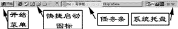
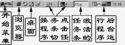
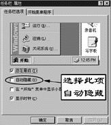
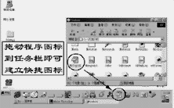
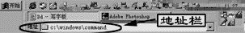

|
|
| 当前位置：电脑报电子版 > 1999 年 > 30 期 > 软件世界 > Win98的任务栏 |
| 《 Win98的任务栏 》 |
| 1.Win95和Win98的任务栏 Windows9X操作系统的主要特色之一就是有一个所谓的“桌面”，而任务栏就是桌面的一个重要组成部分。Win95和Win98都有任务栏，但在使用功能上却有很大的差别： ●Win95和Win98的任务栏都可以隐藏和移动 ●Win98的任务栏中可以添加快捷启动方式 ●Win98的任务栏可以更方便地调整各个项目 ●Win98任务栏能以大图标、文字等显示项目 2.使用任务栏 激活或隐藏窗口：当点击文件或程序的最小化按钮，则程序或文件窗口将只在任务栏中以任务条的形式来表示该程序和窗口正在运行。点击任务栏中的任务条，就可以激活或隐藏窗口。 切换任务：在任务栏中，可以通过点击任务条来切换窗口。 快捷启动程序：在Win98的任务条中，可以点击任务条中的图标来快捷启动程序，Win98已经预先建立了几个快捷启动图标，如IE浏览器，显示桌面等。 系统托盘上的工具：在系统托盘中的图标，一般都是在后台执行的程序，他们没有屏幕窗口，但现在有很多程序也将图标放在系统托盘中，例如FoxMail 3.0。点击系统托盘的图标，一般出现的都是他们的设置窗口或者设置菜单。 使用开始菜单：从开始菜单，可以启动安装在Windows中的程序，以及Windows中的各种设置工具。 建议你熟悉任务条中的各个项目，掌握好任务栏的使用，就可以快捷方便地在Windows中操作。 3.移动任务栏 缺省情况下，任务栏总在桌面的下端，但你可以很容易地将任务栏重新放在桌面的左边、右边或上边。要改变任务栏的位置，只需要将鼠标拖动到某个边上，当任务栏接近它的新位置时，Windows就在它的新位置上显示一个轮廓，这时松开鼠标按钮，任务栏就自动移动到这个新位置了。 4.隐藏任务栏 任务栏可以自动隐藏。当设置了任务栏自动隐藏，平常状况下任务栏就看不见，当鼠标靠到屏幕底部，则任务栏就自动弹出。设置任务栏隐藏，可以增大应用程序窗口的可视面积。要设置任务栏隐藏，选择“开始”菜单中的“设置/任务栏和开始菜单”，在弹出的对话窗口中选择“自动隐藏”项目，如果确认不选择“显示时钟”，则在系统状态托盘中将不显示时间。另外，如果选择该窗口中的“开始菜单程序”标签，则可以定制开始菜单中的项目。 5.在任务栏上建立快捷方式 Win98在任务栏中建立了几个快捷启动方式，并且可以添加新的快捷方式。在任务栏中设置快捷方式，比在桌面上设置快捷方式更方便，因为桌面常常被程序窗口遮盖，而任务栏不会被遮盖，因此，你可以将常用程序的快捷启动方式设置在任务栏中。向任务条中添加快捷方式有多种方法，最简单的方法就是将程序文件图标（或者是它们的快捷方式）拖动到任务栏中。 6.任务栏上的地址和链接 在Win98的任务栏中，还可以添加地址栏和各种网址链接等，特别是当你在地址栏中输入某个文件夹路径，就可以很快地打开该文件夹，也可以输入网页链接地址，快捷地打开网页。要在任务栏中加入地址栏，使用鼠标右键点击任务栏中的空白处，在弹出的快捷菜单中选择“工具栏/地址”。需要注意的是，如果任务栏中的空间比较小，可以将鼠标移动到任务栏的边缘，当鼠标指针变成双箭头的时候，拖动鼠标，将任务栏的空间扩大。 (重庆 陶庆双) |
| 下载本期推荐软件 | 页 首 |
| 《电脑报》版权所有，电脑报网站编辑部设计制作发布 |